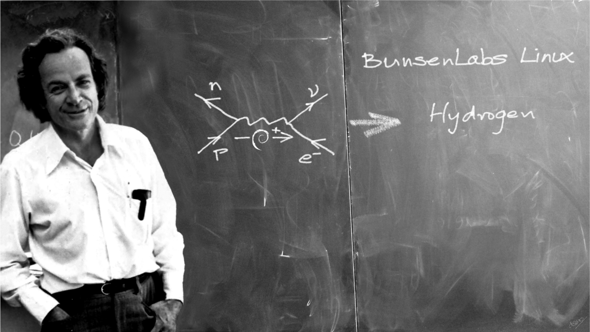

Portrait of Richard Feynman
Time line of Richard Feynman's life and achievements:
- 1918 - Born in New York City.
- 1939 - Obtained his B.Sc at the Massachusetts Institute of Technology.
- 1940-1941 - Research Assistant at Princeton.
- 1942 - Obtained his Ph.D at Princeton University.
- 1945-1950 - Professor of Theoretical Physics at Cornell University.
- 1950-1959 - Visiting Professor and thereafter appointed Professor of Theoretical Physics at the California Institute of Technology.
- 1965 - Received Nobel Prize in Physics.
- 1980 - Member of the Rogers Commission, the panel that investigated the Space Shuttle Challenger disaster.
- 1988 - Died at the age of 69 in Los Angeles.